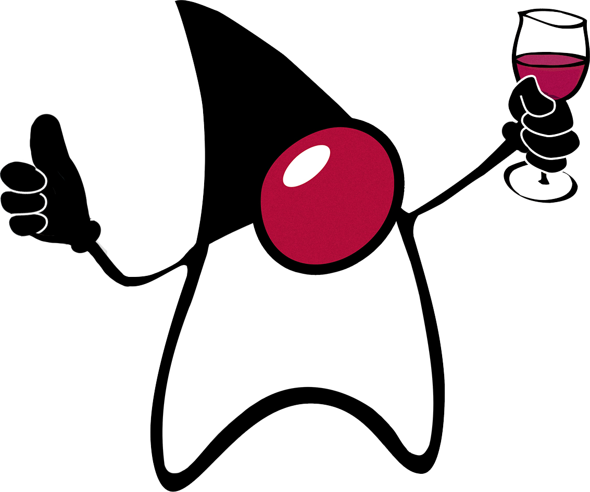

Actualidad
Actualmente me encuentro desarrollando Software de escritorio en base Java, pero en un futuro próximo me gustaría abarcar Android también.

También me encuentro desarrollando Software en base Pawn a través de Amxmodx.

Tengo mi propio emprendimiento de desarrollo de Software para el sector agropecuario.
Ir al sitio.